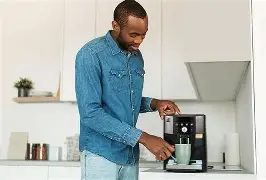

How SASH
Really Works
No cloud. No constant configuration. Just an intelligent server that learns you – silently, instantly, and privately.
A local server that thinks in real time
Inside your home sits a compact, powerful server. It runs lightweight AI models that process data from every camera, motion sensor, temperature probe, and light detector – entirely offline. No round‑trip to the cloud. When you walk into a room, the server detects you in under 50 milliseconds and triggers the right scene before you even flip a switch.

It doesn't just run – it grows with you
Day one: basic routines (wake up → coffee, leave → lights off). Week two: it learns you linger in the bathroom for 15 minutes, so it pre‑heats the floor. Month two: it notices you work from home on Wednesdays and keeps the office at 72°F without being asked. The server continuously updates its internal model – so your home becomes more helpful, never more annoying.
What if you stay home on a Tuesday?
Traditional automation would still turn off the lights when you “should” be at work – annoying. SASH uses multi‑sensor fusion: motion, door contact, even your car's Bluetooth presence. If you're still home at 9 AM on a workday, it automatically switches to “holiday mode” – keeping the living room active, delaying the morning coffee routine, and not locking you out. Same for actual holidays: it checks a local calendar or infers from repeated off‑days. You'll never have to override a dumb schedule again.